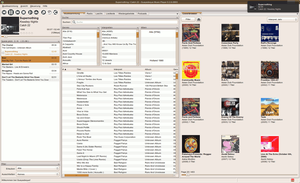
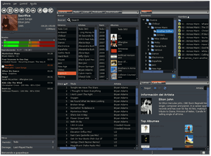
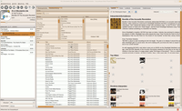
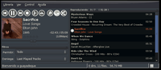

Guayadeque
Dieser Artikel wurde für die folgenden Ubuntu-Versionen getestet:
Ubuntu 16.04 Xenial Xerus
Ubuntu 14.04 Trusty Tahr
Zum Verständnis dieses Artikels sind folgende Seiten hilfreich:
Guayadeque  ist ein Jukebox-Programm zum Abspielen von Audio-Dateien. Es handelt sich um ein GTK-Programm, vergleichbar mit Banshee oder Rhythmbox. Das Ziel des Entwicklers ist es, das Programm möglichst intuitiv, leicht und schnell zu gestalten.
ist ein Jukebox-Programm zum Abspielen von Audio-Dateien. Es handelt sich um ein GTK-Programm, vergleichbar mit Banshee oder Rhythmbox. Das Ziel des Entwicklers ist es, das Programm möglichst intuitiv, leicht und schnell zu gestalten.
Die Stärken des Audioplayers liegen insbesondere im Umgang mit großen Musiksammlungen, die Guayadeque, im Gegensatz zu vielen anderen Audioplayern, problemlos handhabt. Auch sehr große Sammlungen mit mehr als 40.000 Titeln werden flüssig verwaltet. Eine weitere Besonderheit ist die relativ freie Anpassung der Bedienoberfläche. Tabs und Panels können nach Belieben ergänzt und bearbeitet werden.
Die Entwicklung des Programms wurde zwischenzeitlich eingestellt und ab Ubuntu 16.04 ist das Programm auch nicht mehr in den offiziellen Paketquellen enthalten, da das Paket aus den Debianquellen und somit auch aus den Ubuntu-Quellen entfernt wurde.
Inzwischen hat der Entwickler die Weiterentwicklung wieder aufgenommen , Pakete für 16.04 und 16.10 können aber nur aus Fremdquellen bezogen werden.
Funktionsübersicht¶
Guayadeque bietet folgende Funktionen:
Labels - Vergabe von Labels zur individuellen Strukturierung der Musiksammlung
Tag-Editor mit Unterstützung von Music Brainz
Automatisches Laden und Speichern von Liedtexten (Lyrics)
Playlistübertragung auf MP3-Player (Kopieren nach...)
last.fm-Anbindung (Scrobbeln, "intelligente" Wiedergabelisten bestücken)
Intelligente Wiedergabelisten
Coveranzeige
Albumbrowser
Ordnerbrowser 
Webradio
Volumemeter
Unterbrechungsfreie Wiedergabe (gapless / crossfader)
u.v.m.
Einige dieser Funktionen sind vorerst nur in der svn-Version verfügbar (siehe Installation).
Installation¶
Guayadeque ist bis Ubuntu 15.10 in den offiziellen Paketquellen enthalten. Folgendes Paket muss installiert [1] werden:
guayadeque (universe)
 mit apturl
mit apturl
Paketliste zum Kopieren:
sudo apt-get install guayadeque
sudo aptitude install guayadeque
PPA¶
Wer auf die aktuellste Version Wert legt, oder unter 16.04 oder neuer installieren möchte, muss auf das "Personal Package Archiv" (PPA) des Entwicklers zurückgreifen.
Adresszeile zum Hinzufügen des PPAs:
ppa:anonbeat/guayadeque
Hinweis!
Zusätzliche Fremdquellen können das System gefährden.
Ein PPA unterstützt nicht zwangsläufig alle Ubuntu-Versionen. Weitere Informationen sind der  PPA-Beschreibung des Eigentümers/Teams anonbeat zu entnehmen.
PPA-Beschreibung des Eigentümers/Teams anonbeat zu entnehmen.
Damit Pakete aus dem PPA genutzt werden können, müssen die Paketquellen neu eingelesen werden.
Ubuntu 16.04¶
guayadeque (ppa)
mit apturl
Paketliste zum Kopieren:
sudo apt-get install guayadeque
sudo aptitude install guayadeque

Ubuntu 14.04¶
Das Paket für Ubuntu 14.04 repräsentiert den Stand des Projektes aus dem Jahre 2014. Ein ggf. aus den offiziellen Quellen installiertes guayadeque-Paket muss zuvor entfernt werden.
guayadeque-svn (ppa)
mit apturl
Paketliste zum Kopieren:
sudo apt-get install guayadeque-svn
sudo aptitude install guayadeque-svn
Bedienung¶
Das Programm ist anschließend bei Ubuntu-Varianten mit einem Anwendungsmenü unter "Unterhaltungsmedien -> Guayadeque Music Player" zu finden [4]. Die Oberfläche des Programms ist intuitiv zu bedienen. Die einzelnen Quellen und Funktionen werden über die entsprechenden Reiter ausgewählt. Wiedergabeoptionen wie Zufallswiedergabe und Wiederholungen lassen sich über Schaltflächen aktivieren.
Playlist Export - "Kopieren nach"¶
Um die Lieder einer Playlist in einen beliebigen Ordner kopieren zu können, definiert man zunächst unter "Bibliothek -> Einstellungen -> Kopieren nach" das gewünschte Dateiformat. Das Muster "/{a}-{n}-{t}" ergibt z.B. /U2-03-With or Without You.mp3.
Hinweis:
Vorsicht ist geboten, wenn in der Einstellung zu "Kopieren nach" die Option "Quelldateien entfernen" aktiviert ist. Guayadeque überschreibt existierende Dateien im Zielordner ungefragt, daher bei der Benennung genau auf das Muster achten! In der Standardeinstellung wird etwas wie "/{n}-{a}" statt {t} verwendet, was im Zweifelsfall bei Dateien ohne Nummerierung zum Überschreiben durch die nächste Datei ohne Nummerierung führt! Wenn die Quelldatei dann automatisch gelöscht wird, gibt es Datenverlust (direkte Löschung, der "Mülleimer" wird dabei umgangen!).
Ggf. verschwinden bei eingestelltem "Quelldateien entfernen" Dateien auch, wenn die Neuerstellung der Datenbank noch nicht abgeschlossen ist (unten in der Leiste verfolgbar), aber schon weiter Dateien kopiert werden!
Das Ziel-Format der zu kopierenden Dateien lässt sich angeben - praktisch, wenn man Daten auf eine Player laden will, der z.B. nur mp3-Daten lesen kann, die eigene Sammlung aber auf anderem Format basiert - unpraktisch, wenn man Dateien in der eigenen Sammlung verschieben will, aber unterschiedliche Formate verwendet. Guayadeque konvertiert in einem solchen Fall unkommentiert und ohne weitere Nachfrage alle Dateien in das Format, das im Muster angegeben war. Dort also "Format beibehalten" wählen, um derartige Überraschungen zu vermeiden, und in den Einstellungen das Anklicken der Häkchen-Schaltfläche rechts zur Übernahme der Änderung nicht vergessen!
Über das Kontextmenü kann dann entweder eine ganze Wiedergabeliste oder einzelne Lieder aus der "Player Playlist" in einen beliebigen Zielordner kopiert werden. "Kopieren nach" öffnet den entsprechenden Dialog. Dies ist besonders bei einfachen USB-MP3-Playern hilfreich, wenn diese über eine Ordneransicht verfügen.
Es gibt nicht viele Player, die diesen Export bzw. Kopieren von Dateien so unkompliziert ermöglichen wie Guayadeque. Jedes eingebundene Speichermedium ist erreichbar.
Wer möchte, kann auch gespeicherte Wiedergabelisten importieren/exportieren. Hierfür stehen folgende Formate zur Verfügung: M3U, PLS, ASX und XSPF. Ein Export erstellt aber nur die Playlist und kopiert keine Dateien – eine Synchronisation zwischen Playlist und Zielort findet nicht statt.
Konfiguration¶
Bibliothek¶
Um die Musiksammlung abspielen zu können, muss als Erstes der Pfad angegeben werden. Dies macht man in den Einstellungen bei "Musiksammlung -> Einstellungen" unter dem Reiter "Musiksammlung"
Daraufhin kann die Bibliothek über "Musiksammlung -> Musiksammlung aktualisieren" eingelesen werden.
Smart-Mode¶
Der Smart-Mode-Button aktiviert eine auf Last.fm basierte intelligente Ergänzung der Wiedergabeliste, bei der passend zum aktuellen Lied weitere hinzugefügt werden (Scrobbeln, Scrobbling). Diese kann über "Musiksammlung -> Einstellungen -> Wiedergabe" konfiguriert werden. Dabei kann ausgewählt werden, wie viele Lieder hinzugefügt werden und wie gering die Anzahl sein muss, damit Guayadeque dies ausführt. 
Layout¶
Das Layout von Guayadeque lässt sich einfach den eigenen Anforderungen anpassen. Die Elemente des Players lassen sich einzeln über den Menüpunkt "Ansicht" an- und abwählen. Um einem Element/Tab einen neuen Platz zu geben, zieht man den den entsprechenden Reiter dazu auf die gewünschten Stelle. Die vorgeschlagene Platzierung wird dabei farbig unterlegt (siehe Bildschirmfoto). Dabei ist teilweise etwas Geduld gefragt, um den gewünschten Platz zu erreichen. Geänderte Layouts können unter "Ansicht -> Layout speichern" gespeichert werden. Das Laden eines gespeicherten Layouts erfolgt über "Ansicht -> Layout Laden".
Trayicon¶
Ein Symbol zur Steuerung über das Panel lässt sich in den Optionen unter "Musiksammlung -> Einstellungen -> Verhalten -> Task Bar Icon aktivieren" aktivieren. Dank des Trayicons kann der Player auch im minimierten Modus mittels  Maustaste, gesteuert werden.
Maustaste, gesteuert werden.
Internetradio¶
Neben dem einfachen Zugriff auf SHOUTcast-Streams können natürlich beliebig andere Internet-Radiosender hinzugefügt werden. Dazu im Reiter "Radio" einen -Klick auf "Benutzerdefiniert" machen, "Radio hinzufügen" wählen und die Stream-Adresse angeben.
Podcasts¶
Unter "Musiksammlung -> Einstellungen -> Podcasts" kann der Speicherort, der Abfrage-Intervall und der Lösch-Rhythmus eingetragen werden. 
Das Hinzufügen von neuen Podcasts gestaltet sich simpel. Die Quelle auswählen und im Reiter "Podcasts" nach einem -Klick in der "Kanäle"-Spalte angeben.
Problembehebung¶
Kopieren auf NFTS-formatierte Träger¶
Beim Verschieben von Dateien auf NFTS-formatierte Datenträger funktioniert die Option zum "Quelldateien entfernen" nicht, da die Rechtevergabe auf diesen Trägern nicht wie auf Linux-gängigen Dateisystemen erfolgt. Guayadeque kopiert die Daten zwar, bricht aber dann das Entfernen der Originaldateien auf ext-formatierten Trägern ab (was ggf. sinnvoll ist, wenn die Dateimuster nicht richtig gesetzt sind, siehe Hinweis oben).
Verzögerung beim Starten¶
Beim Starten kann es bei großen Sammlungen zu Verzögerungen (bis zu Minuten) kommen, insbesondere, wenn neue Musikstücke dazugekommen sind. Ursache ist die Aktualisierung der im Hintergrund verwendeten SQLite-Datenbank.
Tag-Editor friert zeitweise ein¶
Das Editieren der Metadaten über den integrierten Tag-Editor kann etwas mühselig sein, da der Player beim Bearbeiten immer mal wieder "aussteigt" (Player wird unbedienbar, CPU-Last steigt - z.T. für Minuten - auf 100 Prozent). Umgehen lässt sich das Verhalten, indem man zu verändernde Einträge nicht ganz löscht (das scheint unabdingbar zum zeitweisen Einfrieren zu führen), sondern den gewünschten Inhalt erst dazu schreibt und dann das nicht gewünschte entfernt.
Guayadeque startet nicht¶
Wenn Guayadeque nicht korrekt beendet wird/abstürzt kann es vorkommen, dass es nicht mehr startet. In der Konsole zeigt sich folgende Fehlermeldung:
User@Computer:~$ guayadeque 10:32:47: Error showing window 10:32:47: Another program instance is already running, aborting.
Zur Lösung des Problems muss lediglich die Datei ~/.guayadeque/.guayadeque-"Nutzername" gelöscht werden. Quelle
Links¶
Handbuch

 (PDF)
(PDF)kurze Anleitung
zum selber kompilieren von Guayadeque unter Ubuntu 16.04
Guayadeque Music Player: Light, Unique, Awesome?
- Blogbeitrag, 02/2010AudioPlayer
 Programmübersicht
Programmübersicht
- Erstellt mit Inyoka
-
 2004 – 2017 ubuntuusers.de • Einige Rechte vorbehalten
2004 – 2017 ubuntuusers.de • Einige Rechte vorbehalten
Lizenz • Kontakt • Datenschutz • Impressum • Serverstatus -
Serverhousing gespendet von